Як усе почалося
Усе почалося із завдання для вишколу, який відбудеться 24 жовтня у Швеції: підготувати гутірку на будь-яку тему, до 20 хвилин, а її план здати до 20 жовтня. Ідей було три — скелелазіння, кераміка й зовнішня реклама, — і кілька днів вони просто лежали.
У неділю, 11 жовтня, друг із Пласту показав презентацію, яку зробив за допомогою Claude. 13 жовтня зранку перша спроба в ChatGPT не вдалася: він не зрозумів задуму. Тоді — реєстрація в Claude, спершу на безкоштовній версії, і гутірка «Кераміка України», подорож картою регіонів. Claude зрозумів, чого хочеться, хоча перші спроби були не без проблем.
Спершу було два файли — повна гутірка і коротка для вишколу. Потім зʼявилась думка зробити «програвач», куди можна додавати нові гутірки, — так виросла «Бібліотека гутірок». Її кілька разів переробляли, а згодом додали каталог вмілостей: гутірки привʼязані до вмілостей, щоб за ними можна було складати вмілості.
Найдовше мучились із пультом. Перший вимагав переписувати довжелезний код — і не працював. Ідея з окремим додатком для QR-кодів відпала: його довелося б підлаштовувати під кожну нову гутірку. У підсумку зʼявився універсальний пульт: один QR-код і код із 6 цифр, які працюють з усіма гутірками — і старими, і новими.
Тепер у правому верхньому куті гутірки — маленька лілея. Наведеш на неї курсор — і зʼявляється панель: назва гутірки, зміст, пульт, повний екран і «Бібліотека», що веде на головну. Дизайнів за цей час змінилось багато; нинішній — фінальний.
Раніше
- до 11.10
Завдання для вишколу
Перед вишколом, який відбудеться 24 жовтня у Швеції, дали завдання: підготувати гутірку на будь-яку тему, до 20 хвилин, і здати її план до 20 жовтня. Ідей було три — скелелазіння, кераміка й зовнішня реклама, — але завдання поки відклалось.
11.10.2026
- неділя
Друг показав Claude
Друг із Пласту показав презентацію, яку зробив за допомогою Claude. До того під рукою був лише ChatGPT.
13.10.2026
- ≈ 05:20
Як зробити сайт
Початок — у ChatGPT, у чаті «Як зробити сайт»: як без досвіду програмування й безкоштовно зробити свій сайт (HTML, Google Sites, Wix, Netlify). Перша ідея — сайт для красивих анімованих презентацій: редактор MotionDeck з темами, анімаціями й збереженням, який відкривався просто на телефоні Android; слайди правили JSON-командами.
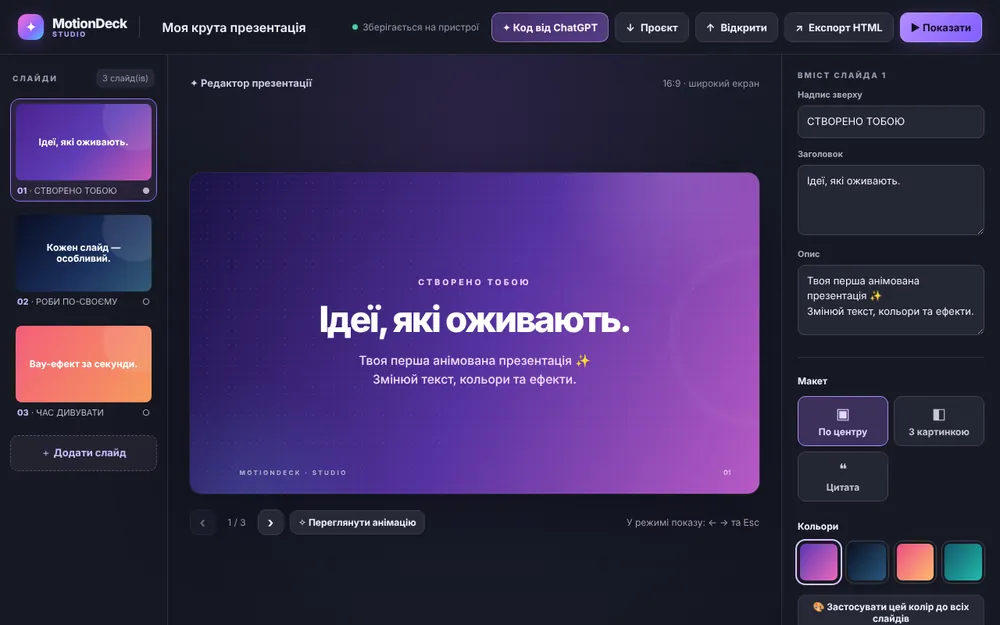
Редактор MotionDeck - ранок, до ≈ 07:40
Перша «Кераміка України» — і перехід до Claude
Перша спроба — у ChatGPT: презентація на 15 слайдів і маршрут картою з чотирьох зупинок (Вінниччина → Київщина → Полтавщина → Прикарпаття). Результат не сподобався: ChatGPT не зрозумів задуму. Тоді — реєстрація в Claude, поки на безкоштовній версії, і нова презентація: карта всіх областей, девʼять регіонів (готова ≈ 07:39). Claude зрозумів, чого хочеться, хоча перші спроби були не без проблем. Саме цю версію ≈ 09:10 передали в ChatGPT, щоб додати пульт.
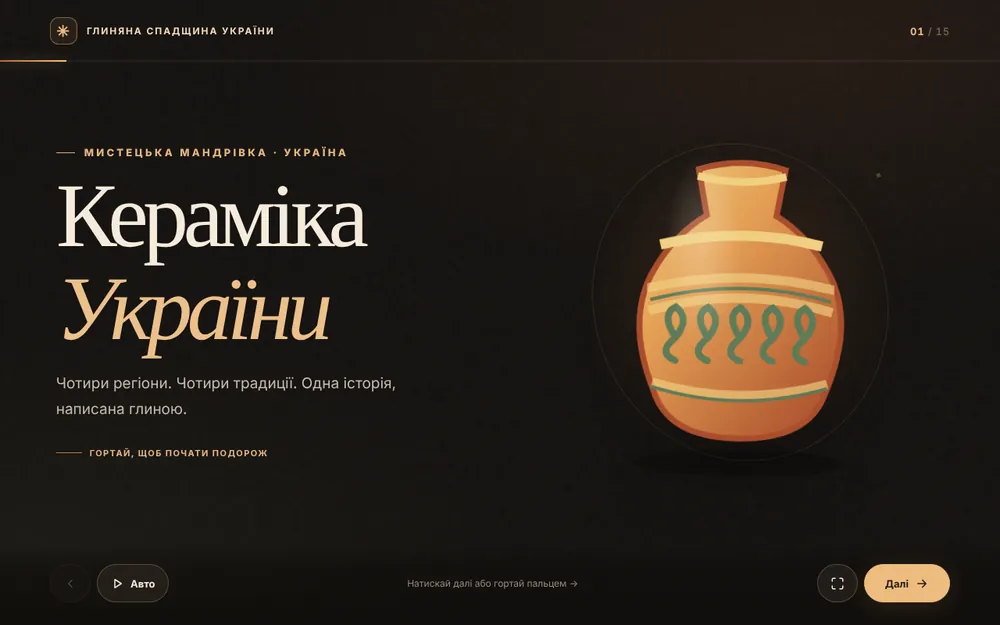
Перша спроба в ChatGPT: 4 регіони, 15 слайдів 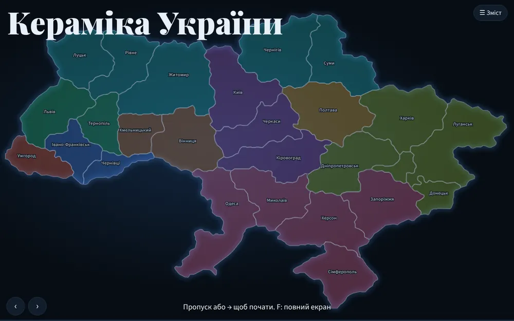
Перша версія з Claude: карта всіх областей, ще без пульта - ранок
Матеріали для гутірки
Фото справжньої кераміки — вази, тарелі, куманці, свічник, — контурна карта областей і приклади оформлення презентацій: з цим працював Claude.
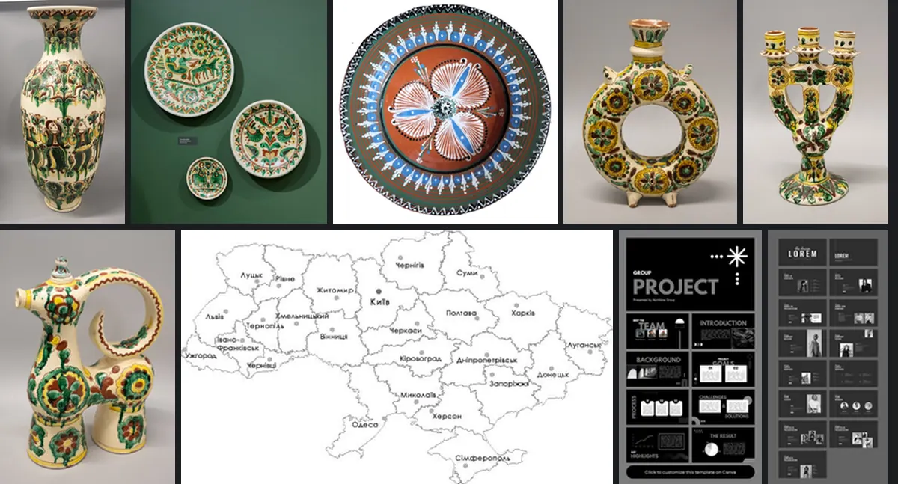
Фото кераміки, карта й приклади оформлення - ≈ 07:50
Ідея ще однієї гутірки: вивіски й логотипи
Окремий чат ChatGPT: за зразком «Кераміки України» спершу сайт «Від ідеї до світла» з конструктором вивіски, потім презентація «Від логотипа до вивіски»: повна (25–30 хв) і коротка (12–15 хв), схеми виробництва, вікторина, нотатки ведучому, пульт з телефона. На сайт ще не додана.
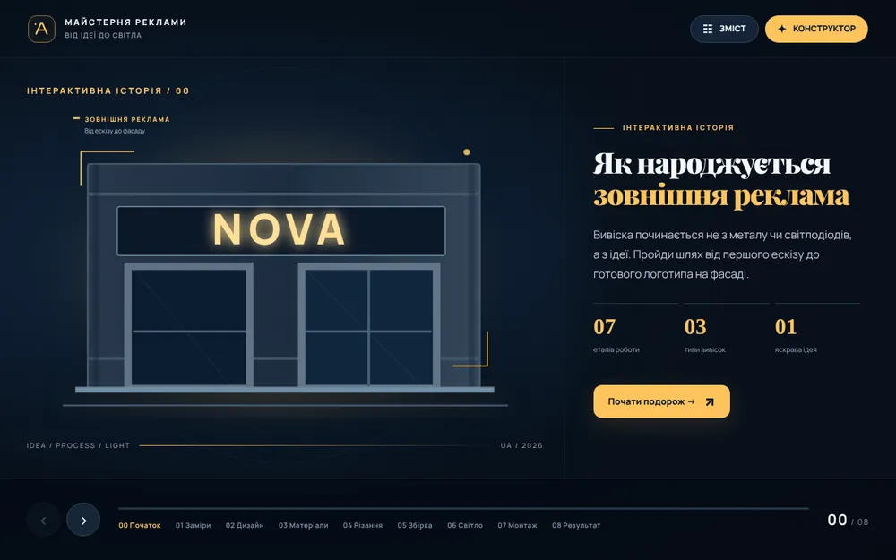
Сайт «Від ідеї до світла» 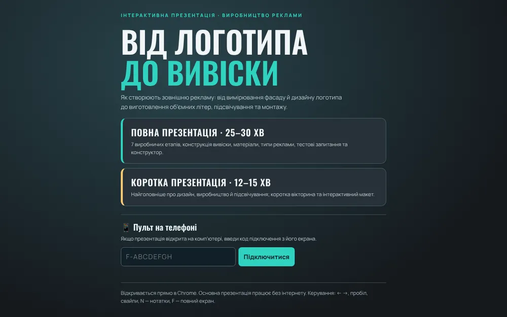
Презентація «Від логотипа до вивіски» - ≈ 09:10
Гутірка для юнацтва
Чат ChatGPT «Керування презентацією телефоном»: відкривати презентацію за посиланням і гортати з телефона, коли показ іде на ноутбуці чи проєкторі (Netlify Drop, QR-код). Презентація стала гутіркою для юнацтва 12–17 років; за вимогами вишколу (24 жовтня, Швеція) — до 20 хвилин. Теми на вибір: скелелазіння, кераміка й зовнішня реклама — обрано кераміку: є власні вироби й готова презентація. Наочно: три піали (після першого випалу; після другого без глазурі; з декором і прозорою глазуруʼю) і гіпсова форма для лиття. Дві версії: повна (45–50 хв) і вишкіл (до 20 хв), плани проведення по хвилинах. План для вишколу треба здати до 20 жовтня 2026 року.
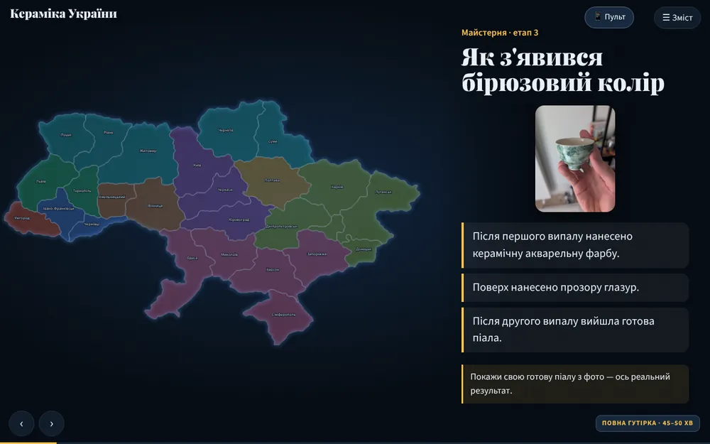
Кнопка «Пульт», позначка версії і фото власної піали - ≈ 12:00–12:30
Дизайн і карта — у Claude
Карта України мала неточності, тож новий дизайн гутірки й виправлену географію робили знову в Claude, ще на безкоштовній версії. ≈ 12:20 зʼявились дві окремі сторінки — «Кераміка України — повна (45–50 хв)» і «вишкіл (20 хв)»; ≈ 12:24 повну версію завантажили, а о 12:28 її вже пробували викласти через Netlify Drop.
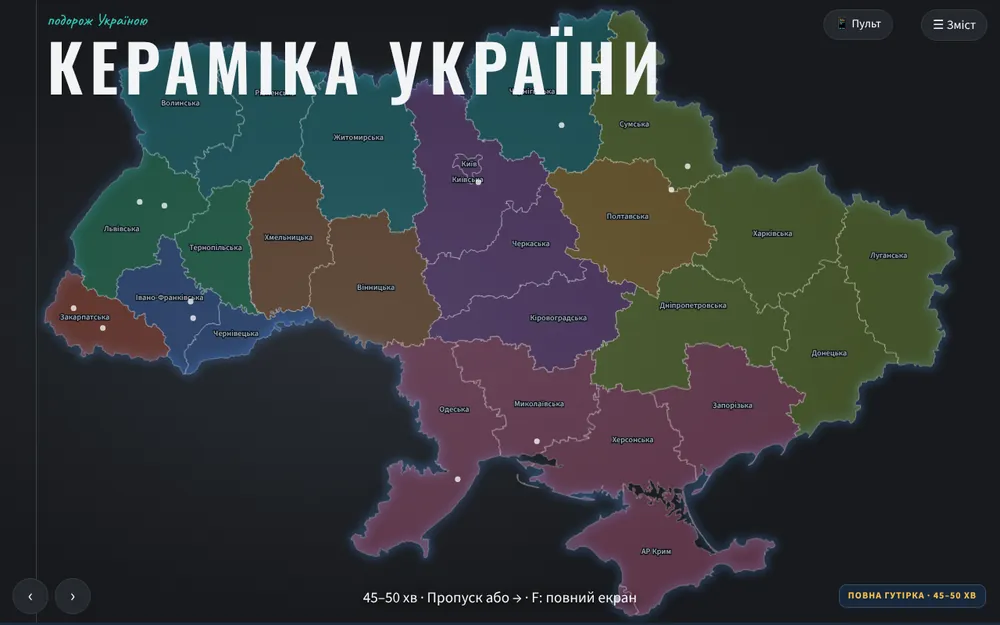
Новий дизайн і виправлена карта - ≈ 12:30–13:35
Перший сайт: дві версії
Стартова сторінка з двома посиланнями — «Повна гутірка · 45–50 хв» і «Вишкіл · до 20 хв», кожна версія у своїй папці, уже в новому дизайні. Архів готували для Netlify Drop.
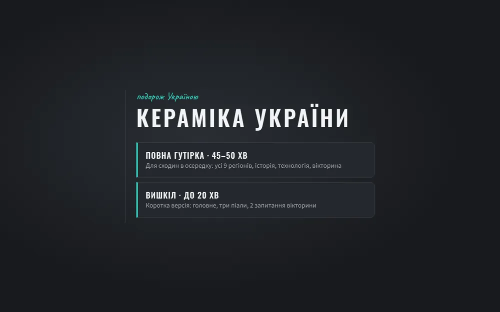
Стартова сторінка першого сайту - ≈ 14:10 і далі
Пульт, що працює
Перший пульт був мукою: довжелезний код, який треба було переписувати вручну, — і він не працював. Була ідея окремого додатка для QR-кодів, але тоді кожну нову гутірку довелося б підлаштовувати. У ChatGPT телефон підключався нестабільно, ще й, схоже, закінчився ліміт Netlify; ≈ 14:10 зʼявився запасний пульт через Wi-Fi з Python-сервером. Далі — один файл для Chrome з обома версіями і, нарешті, підключення за 6-значним кодом. Перевірено на своїх пристроях — працює.
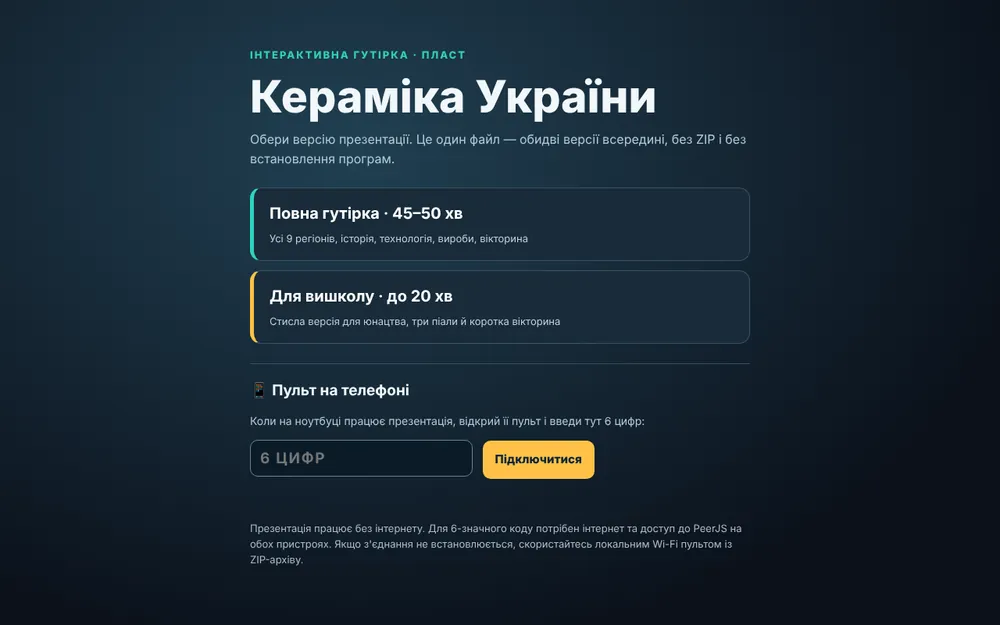
Один файл: вибір версії і пульт за 6 цифрами - ≈ 17:15–17:40
Знову в Claude — уже з підпискою
Розмова в Claude продовжилась на підписці, і першим прийшов файл з пультом за 6 цифрами. За пів години — сайт для Netlify: головна «Бібліотека гутірок» з лілеєю (поки умовною) і «СКОБ!», пошук і фільтри, «Кераміка України» однією карткою з двома версіями, універсальний пульт: один QR-код і код із 6 цифр для всіх гутірок — і старих, і нових, з окремою сторінкою для телефона, яка сама перепідключається. Нова гутірка — це просто нова папка. Сама гутірка — подорож картою України: що таке кераміка, як її роблять, історія по епохах, девʼять регіонів із виробами, запитання до залу й вікторина на карті.
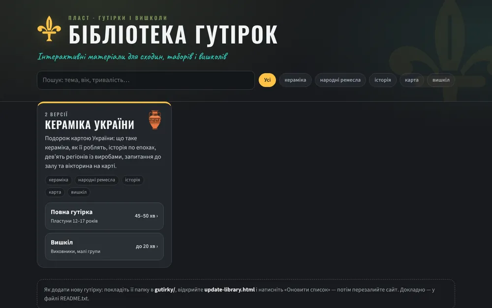
Перша «Бібліотека гутірок» — сайт для Netlify 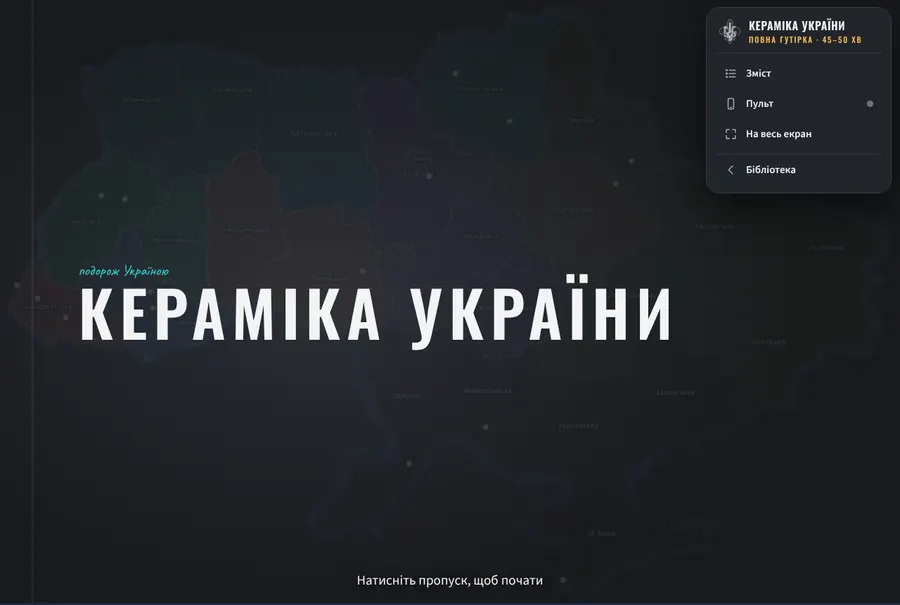
Титульний слайд гутірки «Кераміка України» - ≈ 17:53
Бібліотека за одним посиланням
Щоб не возитися з zip і Netlify, бібліотека стала сторінкою в Claude за одним посиланням. Пульт працював через сам Claude — на телефоні треба було увійти в той самий обліковий запис. Але відкривалась ця сторінка лише всередині Claude.
- ≈ 18:24
Файл для Chrome і пульт на Netlify
Тоді — звичайний файл gutirky.html: завантажити, двічі клацнути — і він відкривається в Chrome без Claude. Сторінку пульта для телефона виклали окремо на Netlify.
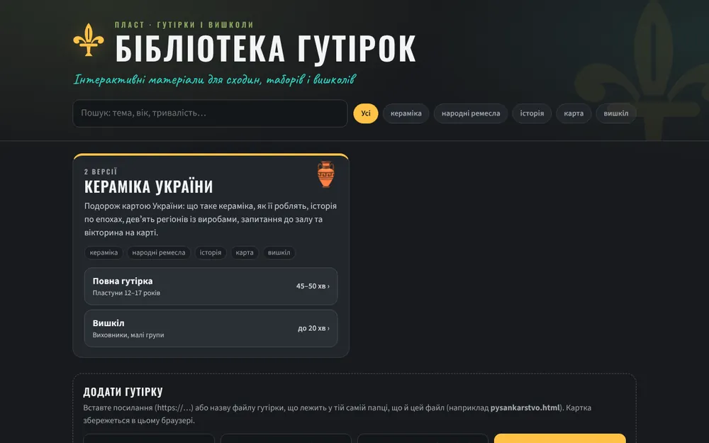
Бібліотека одним файлом для Chrome - ≈ 18:44
Netlify підводить
Пульт на Netlify не підключався — «Не виходить підключитись», а безкоштовні кредити Netlify закінчувалися.
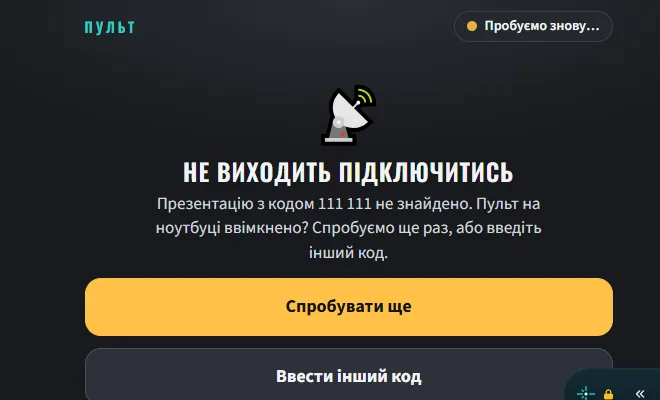
Пульт на Netlify, 18:44 - ≈ 18:47
Сторінка «Завантаження гутірок»
Дві кнопки — gutirky.html і пульт для Netlify — та покрокова інструкція «Один раз» і «Щоразу».
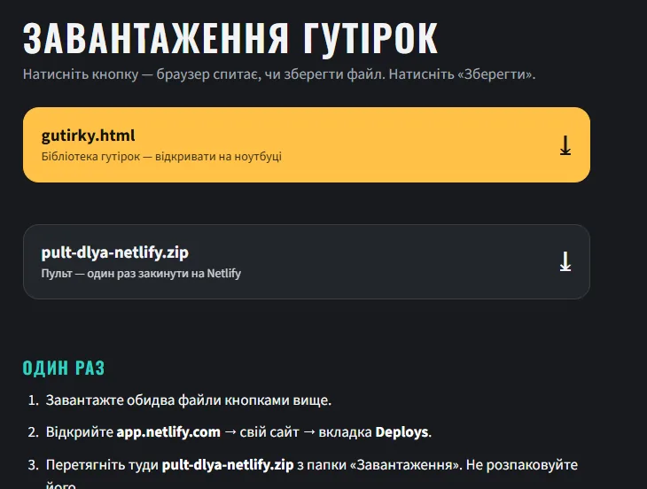
Сторінка «Завантаження гутірок» - ≈ 19:24–20:10
GitHub: обліковий запис і сайт
Щоб не залежати від Netlify і файлів: ≈ 19:24–19:48 — реєстрація на GitHub (обліковий запис gutirky-fi), ≈ 19:59 — сховище gutirky-fi.github.io, о 20:10 — перша версія сайту. Усе за одним посиланням, а оновлення приходять самі. Сайт прихований від пошуковиків.
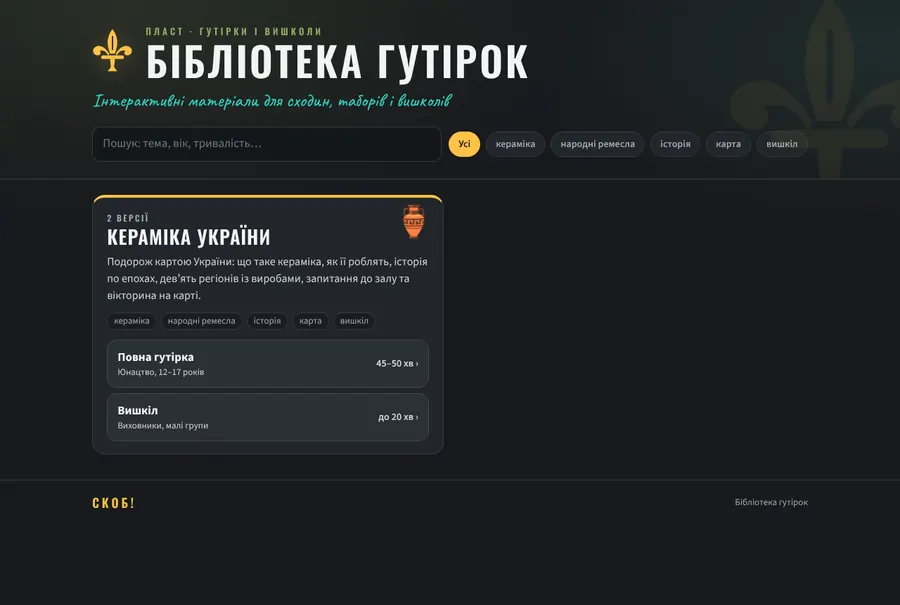
Перша версія головної сторінки 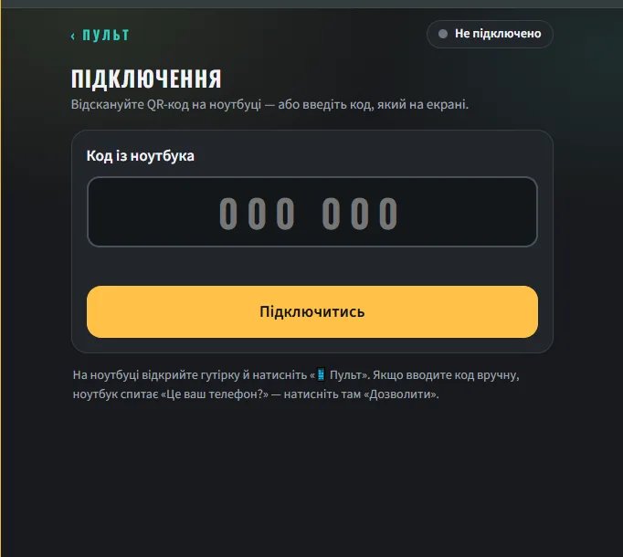
Сторінка пульта на GitHub - 20:19–20:30
Зручніше вести гутірку
Кнопка «Пульт» на головній лишилась тільки на телефоні. Меню гутірки зібране в одному місці, у правому верхньому куті. Прибрано стрілки й гортання біля країв, щоб випадково не перегортати слайди. ≈ 20:29 оновлено й файл gutirky.html для роботи без інтернету.
- ≈ 20:45–22:16
Пошук дизайну
На полотні «Головна бібліотеки: варіанти» один за одним: ≈ 20:45 — А «Графіт», Б «Нічна ватра», В «Відзнаки»; ≈ 21:02–21:09 — каталог вмілостей у кожному стилі; ≈ 21:16 — поєднання А + Б + В у темній і світлій темі. О 21:26 прийшов логотип Пласту у Фінляндії — і ≈ 21:50 зʼявився Г; ≈ 22:02 — Д1, Д2, Д3 з логотипом; ≈ 22:06 — Е «Північний хрест», зроблений з нуля. Умовну лілею замінено справжнім логотипом. Обрано Д1. Усі 17 макетів можна відкрити в «Ранніх версіях».
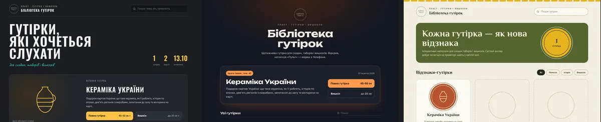
А «Графіт», Б «Нічна ватра», В «Відзнаки» 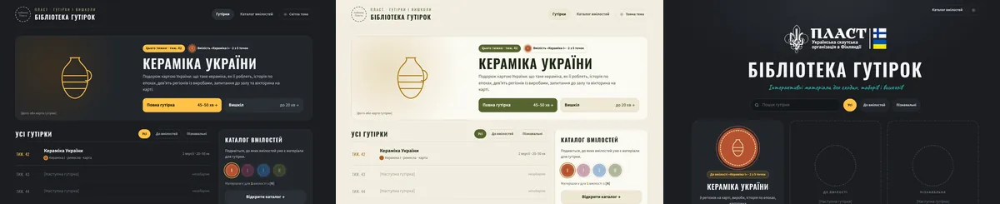
А + Б + В (темна і світла) та Г 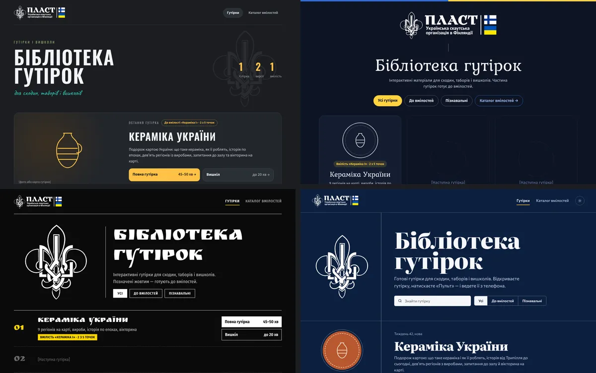
Д1, Д2, Д3 і Е «Північний хрест» - 22:18–22:54
Робоча копія і правки
Перед тим як ставити на сайт, зроблено копію в новому дизайні, по якій можна клацати. Правки: «Пластове юнацтво» і «для сходин гуртка і таборів» замість «вишколів»; без обіцянок щотижневих гутірок; карта України з гутірки в блоці «Остання гутірка»; рівно по центру «СКОБ!» унизу; меню, зміст і вікно пульта в гутірці — у тому самому стилі.
- 22:55
Дизайн Д1 на сайті
Новий дизайн із логотипом Пласту у Фінляндії опубліковано.
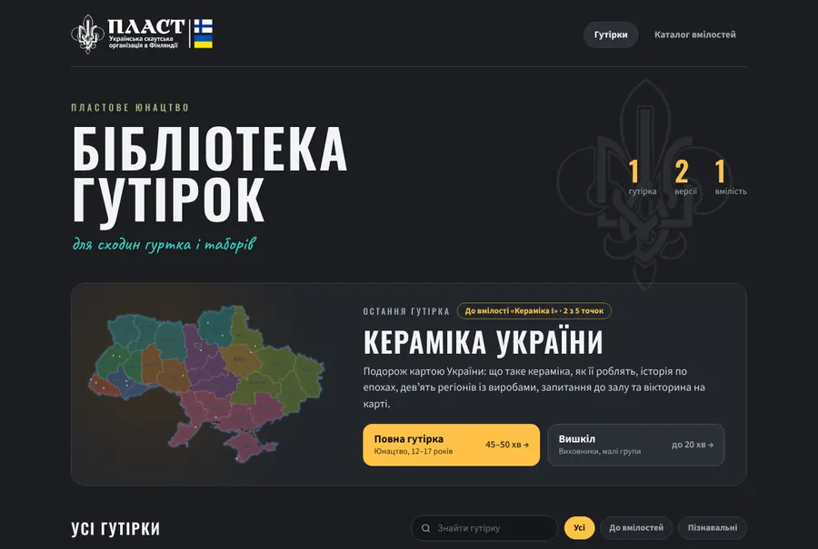
Головна сторінка в дизайні Д1 - 22:59–23:02
Значок вкладки
О 22:58 власник сфотографував вкладки: у Вікіпедії й Google є значки, а в сайту — глобус. Тепер там емблема Пласту.
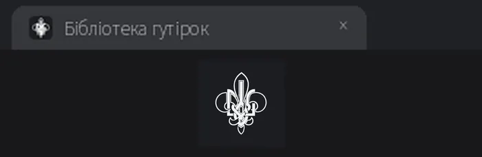
Значок у вкладці (збільшено) - 22:55–23:43
Каталог вмілостей
О 22:55 у каталозі було 14 вмілостей для прикладу. ≈ 23:21 — копія з усіма 448 назвами з бібліотеки вмілостей Пласту (plast.global), ще без нашивок. О 23:43 — 162 вмілості з каталогу Пласту у Фінляндії зі справжніми нашивками; кожен рівень веде на свою сторінку на порталі Пласту у Фінляндії.
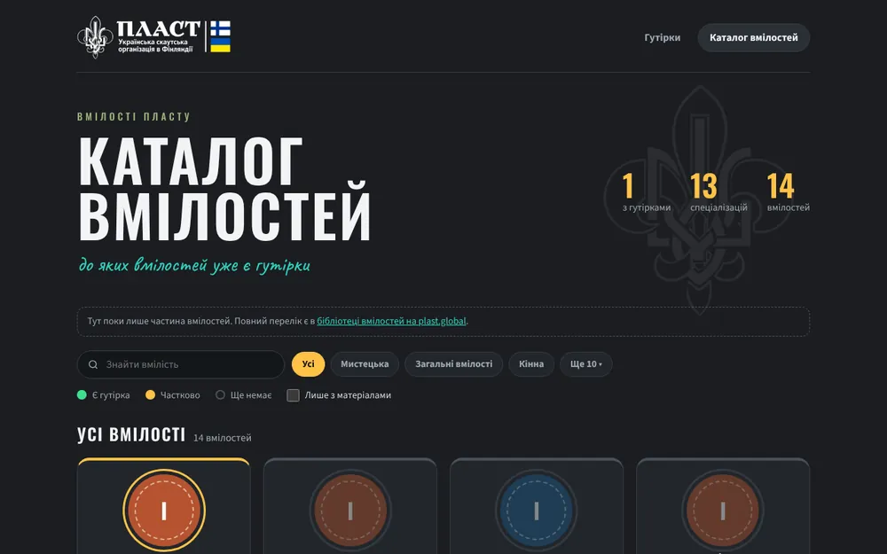
22:55 — 14 вмілостей для прикладу 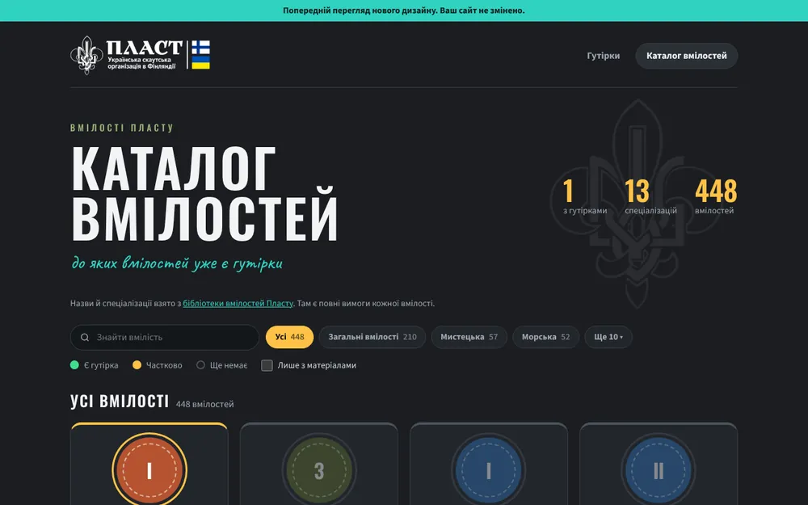
≈ 23:21 — 448 вмілостей, ще без нашивок - 23:52
Нашивки
Чорно-білі нашивки (вмілості Пласту в Польщі) стоять на світлій підкладці, щоб їх було видно на темному тлі. «Настільні ігри» — без білого квадрата.
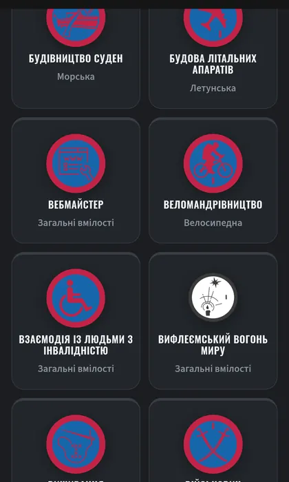
Каталог з нашивками на телефоні


14.10.2026
- 00:05–00:16
Рішення: нашивки не перефарбовувати
Офіційні нашивки лишаються такими, як на plast.global і порталі Пласту у Фінляндії, щоб на всіх сайтах вони збігались. Щоб вирішити, о 00:05 зʼявилась окрема сторінка з 24 нестандартними нашивками; о 00:16 її прибрали.
- 00:25–00:31
Памʼять проєкту
Усі робочі файли й повний опис проєкту збережено на GitHub, щоб продовжувати роботу з будь-якої нової розмови. Щороку 1 вересня каталог вмілостей перевірятиметься автоматично.
- 00:45
Сторінка історії
Ця сторінка: хронологія створення і розвитку сайту.
- 00:50
Чорно-білі нашивки — у кінець
У каталозі й у кожній спеціалізації спершу йдуть вмілості з гутірками, далі — з кольоровими нашивками, потім «Настільні ігри» і «Сигналізація-комунікація», а чорно-білі та без нашивки — в самому кінці.
- ≈ 00:52–01:50
Історія доповнюється
Власник надіслав підсумки чатів ChatGPT, три пакети старих файлів і розповів, як усе почалося. Сюди додано все, що вдалося відкопати: вступ «Як усе почалося», ранок 13 жовтня, усі версії гутірки й сайту, 17 макетів дизайну — разом 29 позицій у «Ранніх версіях».
- ≈ 02:14–03:40
Сайт на будь-якому екрані
Сайт перевірено на 20 розмірах екранів — від телефона 320 px до монітора 4K, стоячи й лежачи, на планшетах, ноутбуках і моніторах. Гутірка: на малих телефонах текст більше не налазить на заголовок і карту; на телефоні лежачи вміщається, а якщо тексту забагато — панель гортається, і новий пункт сам виїжджає на видне місце; на великих моніторах текст більший. На сенсорних екранах дрібні кнопки отримали більшу зону дотику, а в каталозі на телефоні лежачи нашивка в деталях менша. На ноутбуці все виглядає, як і було.
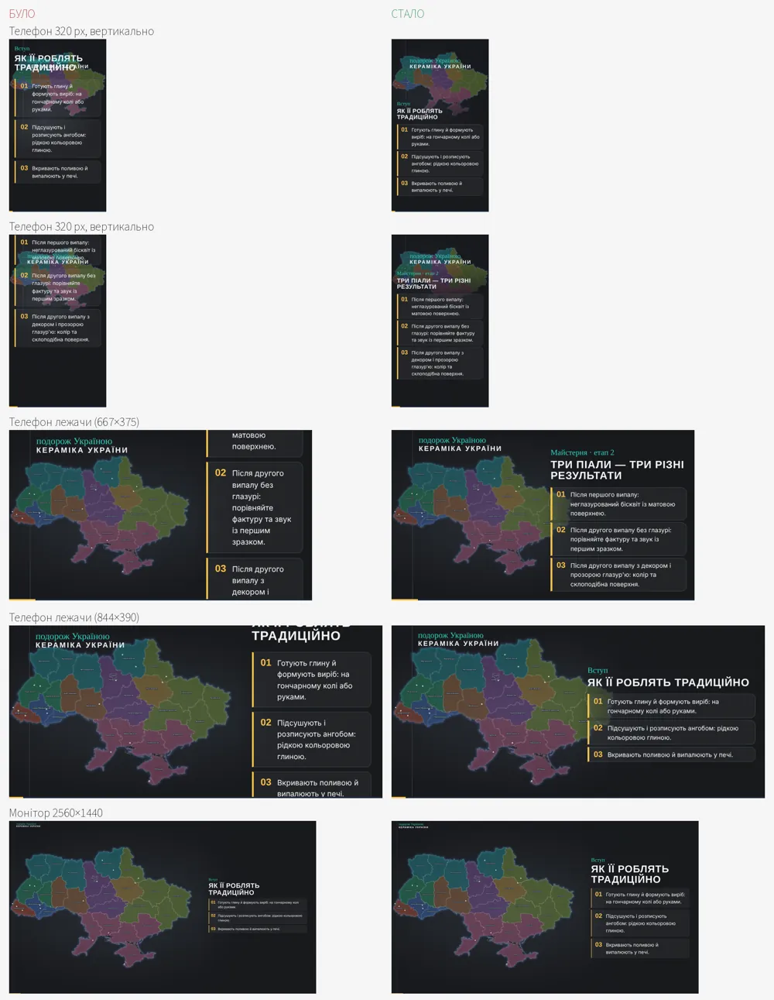
Було / стало: телефон, телефон лежачи, монітор - ≈ 03:40–04:10
Гортання дотиком
На телефоні гортати свайпом було незручно. Тепер на будь-якому сенсорному екрані дотик лівої третини — назад, решти екрана — далі; свайп теж лишився. Області на карті у вікторині й надалі відповідають на дотик, а на огляді регіонів область можна обрати посередині екрана. На ноутбуці мишкою все, як було.
- ≈ 04:15–05:00
Гутірка за вимогами вмілості
Проба нового підходу: з каталогу навмання обрано вмілість «Будова літальних апаратів І», і на кожну з її п’яти вимог зроблено розділ гутірки з малюнками, практикою й запитанням. До неї — вікторина з 15 запитань (і файл для Kahoot), сторінка «Вивчай сам» для юнаків і «Перевір себе». Прогрес юнака зберігається лише на його телефоні й лише за згодою. Поки що це проба — на сайт піде після погодження.
- ≈ 05:10–05:30
Своя гра «Потужний СКОБ!»
Замість Kahoot — своя гра на нашому сайті. Запитання на екрані, юнаки відповідають зі своїх телефонів: сканують QR-код або вводять 6 цифр і пишуть ім’я. Відповіді — С, К, О, Б (від пластового «Сильно, Красно, Обережно, Бистро»), за швидку правильну відповідь — більше балів, після кожного запитання — лідери, наприкінці — п’єдестал. Без реєстрації, нічого не зберігається. Можна грати й без телефонів — на екрані.
- ≈ 05:30–05:50
Нові малюнки до гутірки про літальні апарати
Схематичні малюнки замінено на справжні ілюстрації: навчальний літак згори й збоку (з шасі), вісім видів ЛА, профіль крила за справжньою формою NACA 4415, підйомна сила з тиском «−» і «+», п’ять схем на прикладі справжніх літаків. Тангаж, крен і рискання показує рухомий 3D-літачок — рулі відхиляються, а літак обертається. Можна ввімкнути фото справжніх літаків з Вікісховища.
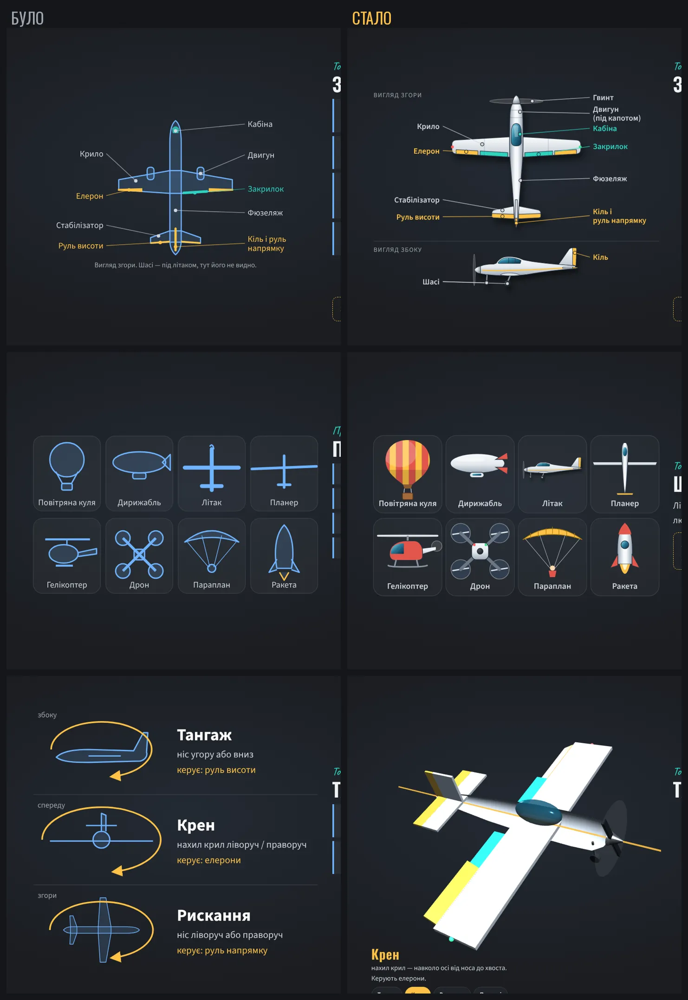
Було / стало: частини літака, види ЛА, тангаж-крен-рискання - ≈ 06:07–06:50
Неоновий стиль
Власник надіслав п’ять неонових картинок (зроблених в іншому ШІ) як приклад стилю. Усі малюнки гутірки перемальовано в такому стилі: темно-синій літак зі світним блакитним контуром, золоті рулі, бірюзові закрилки й кабіна, підписи в «таблетках». Заодно виправлено неточності прикладу (підпис «Закрилок» показував на елерон, не було шасі). 3D-літачок теж став неоновим: креслярська сітка внизу, світні контури, рулі рухаються.
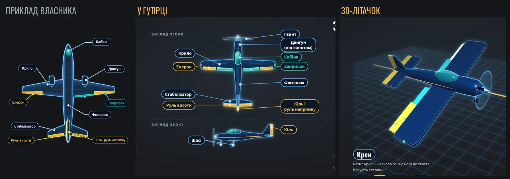
Приклад власника — у гутірці — 3D-літачок - ≈ 06:44–07:40
Власник гортає гутірку і виправляє
Перший прохід власника по слайдах. Титульний слайд перероблено: ліворуч назва, праворуч неоновий 3D-літак, що повільно пролітає по колу, без смуги прокрутки. Підписи на малюнках вишикувано в акуратні колонки з ламаними виносками. Для «Що робить літак керованим» — окремий малюнок зі світними рулями. Повітря на малюнках тепер тече, а смужка паперу піднімається, коли дмуть. Перемикач фото прибрано. «Вгадай схему» стала справжньою грою (5 силуетів). У «Потужному СКОБі» — коротка адреса gutirky-fi.github.io/skob, перевірка імен (українські імена — одразу, інші — після ✓ ведучого, лайка — ні), хрестик біля кожного імені; правильна відповідь — гра йде далі сама, неправильна — зупиняється на поясненні. Запитання й відповіді щоразу перемішуються.
- 07:50
Гутірка — виховникові, матеріали — юнакам
Щоб юнаки не бачили гутірку наперед, для них зроблено окрему сторінку: там лише «Вивчай сам» і «Перевір себе», без презентації, плану й гри. Виховник дає її після гутірки: QR-код на останньому слайді або посилання зі стартової сторінки («Для юнаків»). «План гутірки» тепер можна роздрукувати або зберегти в PDF однією кнопкою.
- 08:29–09:20
Один сайт — кілька входів
Власник заплутався, як має виглядати сайт далі. Разом склали задум: головна з входами «Для всіх» (підказки, співаник, цікаве), «Юнацтво» (вмілості з нашивками, «Мої вмілості», матеріали для самостійного навчання) і «Виховники» (за кодом: гутірки, плани, гра). Виховник бачить усе. Зроблено клікабельний макет для перегляду; на справжній сайт ще не ставили.


Попереду
- до 20.10
Здати план гутірки
План гутірки «Кераміка України» для вишколу — писарю вишколу.
- 24.10
Вишкіл у Швеції
Гутірка до 20 хвилин для гуртка з 5–6 осіб.
Ранні версії
Файли 13 жовтня, з яких усе починалося, — у тому порядку, як вони зʼявлялися. Відкриваються тут же, поверх історії; повернутися — кнопка «← До історії» або «назад» у браузері. Файли Word і ZIP завантажуються. Час приблизний.
- MotionDeck — ChatGPT: редактор анімованих презентацій; слайди правили JSON-командами.
- Перша презентація — ChatGPT: 15 слайдів, маршрут картою з 4 регіонів.
- Карта всіх областей — Claude, безкоштовна версія: 9 регіонів, ще без пульта.
- Перший пульт — ChatGPT: сайт для Netlify Drop, кнопка «Створити підключення» і QR-код.
- Повна гутірка з пультом — ChatGPT: кнопка «Пульт», позначка версії, фото піали.
- Вишкіл з пультом — Коротка версія, до 20 хвилин.
- План повної гутірки (45–50 хв) — Хід гутірки по хвилинах і що сказати про кожен регіон. Файл Word.
- План гутірки для вишколу (до 20 хв) — Для гуртка 5–6 осіб; здати до 20 жовтня 2026 року. Файл Word.
- Новий дизайн: повна — Claude, безкоштовна версія: нові шрифти й виправлена карта.
- Новий дизайн: вишкіл — Claude: та сама гутірка, коротка версія.
- Перший сайт: дві версії — Claude: стартова сторінка і дві папки для Netlify Drop.
- Пульт через Wi-Fi — ChatGPT: архів з Python-сервером і інструкцією. Файл ZIP.
- Один файл з обома версіями — ChatGPT: вибір версії на старті, код підключення.
- Пульт за 6 цифрами — Остання версія з ChatGPT — пульт, що запрацював.
- Сайт для Netlify — Claude з підпискою: перша «Бібліотека гутірок», пульт з QR-кодом.
- Бібліотека за одним посиланням — Claude: сторінка всередині Claude; пульт працював лише там.
- Окрема сторінка пульта — Для телефона; жила на Netlify. Відкривайте з телефона.
- Сторінка «Завантаження гутірок» — Дві кнопки й інструкція; кнопки працювали лише всередині Claude.
- Перший сайт на GitHub — Перша версія gutirky-fi.github.io, ще з блоком «Додати гутірку».
- Бібліотека одним файлом — gutirky.html для Chrome — працює і без інтернету.
- Останній вигляд до Д1 — Пульт лише на телефоні, меню гутірки в куті.
- Варіанти дизайну — Усі 17 макетів: А, Б, В, їх поєднання, Г, Д1–Д3 і Е.
- Робоча копія дизайну Д1 — Копія, по якій клацали перед тим, як ставити Д1 на сайт.
- Д1 на сайті — Перший день нового дизайну; у каталозі 14 вмілостей для прикладу.
- Каталог із 448 вмілостей — Копія для перегляду: усі назви з бібліотеки вмілостей Пласту, ще без нашивок.
- Каталог із 162 вмілостей — Перелік і нашивки з каталогу Пласту у Фінляндії.
- Сторінка перевірки нашивок — 24 нестандартні нашивки — щоб вирішити, що з ними робити. Через 11 хв прибрана.
- «Від ідеї до світла» — ChatGPT: сайт для майбутньої гутірки про вивіски, з конструктором вивіски.
- «Від логотипа до вивіски» — ChatGPT: презентація — повна (25–30 хв) і коротка (12–15 хв).
Усі публікації сайту
Кожне оновлення, яке потрапило на gutirky-fi.github.io, — від найновішого.
- PROEKT: макет головної з входами (лише знімки)
- PROEKT: схема «Один сайт — два входи» (ідея власника)
- Проба: картка гутірки в бібліотеці = стартова сторінка гутірки
- Проба «Будова ЛА І»: окрема сторінка для юнаків, друк плану
- Будова ЛА І: виправлено коментар про нотатки
- PROEKT: журнал — нотатки лише на пульті
- «Будова ЛА І»: нотатки ведучого — лише на пульті й у плані, не на спільному екрані
- «Будова ЛА І»: нотатки ведучого, план гутірки, чіткіше вікно СКОБ
- «Будова ЛА І»: правки власника — титул з 3D, акуратні підписи, анімація, гра «Вгадай схему», імена в СКОБ
- Гутірка «Будова ЛА І»: неоновий стиль малюнків і неоновий 3D-літачок
- PROEKT: назва збирача гутірки
- Копія сайту для показу: «Будова ЛА І» в бібліотеці, меню в куті й пульт у гутірці
- Гутірка «Будова ЛА І»: нові малюнки, фото, 3D-літачок; гра СКОБ закривається при виході
- Проба гри «Потужний СКОБ!»: вікторина з відповідями з телефонів
- Проба: гутірка «Будова літальних апаратів І» за вимогами вмілості
- Опис проєкту: бібліотека на порталі — свій стиль у межах брендбука
- Опис проєкту: як можна перенести бібліотеку на портал Пласту у Фінляндії
- Опис проєкту: прогрес юнацтва лише на пристрої за їхнім вибором; ідея презентації сайту
- Опис проєкту: ідеї власника на майбутнє (входи, юнацький розділ, пісенник)
- Гутірка: на сенсорних екранах дотик зліва — назад, справа — далі
- Сайт під усі екрани: гутірка на телефонах, планшетах і моніторах до 4K, більші зони дотику
- Історія: картинки й ранні версії відкриваються поверх сторінки, з кнопкою «До історії»
- Історія: усе з розмови — версії сайту, артефакти, 17 макетів дизайну, знімки
- Історія: вишкіл 24.10 у Швеції ще попереду, план — до 20.10
- Історія: вступ «Як усе почалося» зі слів власника
- Історія: MotionDeck і перша презентація ChatGPT
- Історія: другий пакет старих файлів, хронологія 13.10 уточнена
- Історія: ранні версії гутірки, плани і знімки ранку 13.10
- Історія: ранок 13.10 за підсумками чатів ChatGPT
- Історія: чати ChatGPT на початку роботи
- Історія: початок роботи ≈ 12:00 (ChatGPT, потім Claude)
- Каталог: «Сигналізація-комунікація» лишає світлу підкладку
- Каталог: «Сигналізація-комунікація» — разом з «Настільними іграми», перед чорно-білими
- Каталог: «Настільні ігри» — після кольорових нашивок, перед чорно-білими
- Каталог: чорно-білі нашивки й вмілості без нашивки — в самому кінці
- Сторінка «Історія сайту» (/istoriya/, не в меню): хронологія створення і всі публікації
- Опис проєкту: щорічна перевірка каталогу вмілостей
- Робочі файли й опис проєкту в _robota/, щоб продовжувати з будь-якої нової розмови
- Прибрано сторінку перевірки нашивок
- Сторінка для перевірки нашивок вмілостей (не в меню сайту)
- Каталог: чорно-білі нашивки на світлій підкладці, квадратна картинка обрізана по колу
- Каталог вмілостей: перелік і нашивки з каталогу Пласту у Фінляндії
- Значок вкладки: справжня контурна емблема замість заповненого силуету
- Значок вкладки: емблема Пласту (сайт і пульт)
- Новий дизайн Д1: логотип Пласту у Фінляндії, каталог вмілостей
- Гутірка: прибрано стрілки біля країв (щоб не гортати випадково)
- Гутірка: гортання кліком біля лівого/правого краю, меню без «Назад/Далі»
- Головна: пульт лише на телефоні, без блоку «Додати гутірку»
- Бібліотека гутірок: перша версія сайту